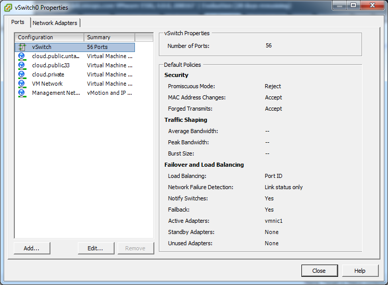
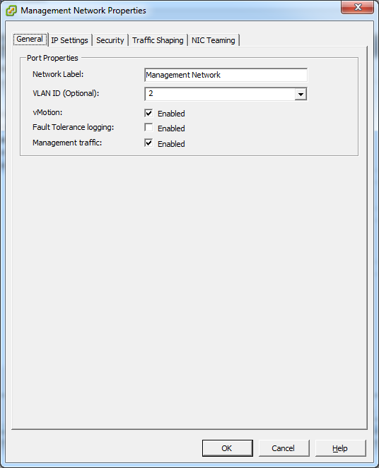
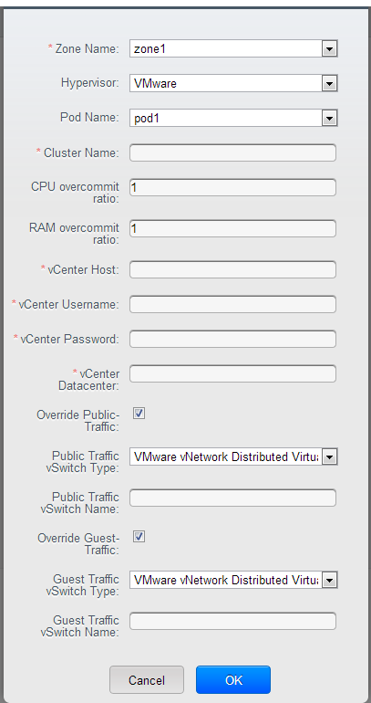

Host VMware vSphere Installation¶
If you want to use the VMware vSphere hypervisor to run guest virtual machines, install vSphere on the host(s) in your cloud.
System Requirements for vSphere Hosts¶
Software requirements:¶
vSphere and vCenter, versions 4.1, 5.0, 5.1 or 5.5.
vSphere Standard is recommended. Note however that customers need to consider the CPU constraints in place with vSphere licensing. See http://www.vmware.com/files/pdf/vsphere_pricing.pdf and discuss with your VMware sales representative.
vCenter Server Standard is recommended.
Be sure all the hotfixes provided by the hypervisor vendor are applied. Track the release of hypervisor patches through your hypervisor vendor’s support channel, and apply patches as soon as possible after they are released. CloudStack will not track or notify you of required hypervisor patches. It is essential that your hosts are completely up to date with the provided hypervisor patches. The hypervisor vendor is likely to refuse to support any system that is not up to date with patches.
Warning
Apply All Necessary Hotfixes. The lack of up-do-date hotfixes can lead to data corruption and lost VMs.
Hardware requirements:¶
- The host must be certified as compatible with vSphere. See the VMware Hardware Compatibility Guide at http://www.vmware.com/resources/compatibility/search.php.
- All hosts must be 64-bit and must support HVM (Intel-VT or AMD-V enabled).
- All hosts within a cluster must be homogenous. That means the CPUs must be of the same type, count, and feature flags.
- 64-bit x86 CPU (more cores results in better performance)
- Hardware virtualization support required
- 4 GB of memory
- 36 GB of local disk
- At least 1 NIC
- Statically allocated IP Address
vCenter Server requirements:¶
- Processor - 2 CPUs 2.0GHz or higher Intel or AMD x86 processors. Processor requirements may be higher if the database runs on the same machine.
- Memory - 3GB RAM. RAM requirements may be higher if your database runs on the same machine.
- Disk storage - 2GB. Disk requirements may be higher if your database runs on the same machine.
- Microsoft SQL Server 2005 Express disk requirements. The bundled database requires up to 2GB free disk space to decompress the installation archive.
- Networking - 1Gbit or 10Gbit.
For more information, see “vCenter Server and the vSphere Client Hardware Requirements”.
Other requirements:¶
- VMware vCenter Standard Edition 4.1, 5.0, 5.1 or 5.5 must be installed and available to manage the vSphere hosts.
- vCenter must be configured to use the standard port 443 so that it can communicate with the CloudStack Management Server.
- You must re-install VMware ESXi if you are going to re-use a host from a previous install.
- CloudStack requires VMware vSphere 4.1, 5.0, 5.1 or 5.5. VMware vSphere 4.0 is not supported.
- All hosts must be 64-bit and must support HVM (Intel-VT or AMD-V enabled). All hosts within a cluster must be homogeneous. That means the CPUs must be of the same type, count, and feature flags.
- The CloudStack management network must not be configured as a separate virtual network. The CloudStack management network is the same as the vCenter management network, and will inherit its configuration. See Configure vCenter Management Network.
- CloudStack requires ESXi and vCenter. ESX is not supported.
- Ideally all resources used for CloudStack must be used for CloudStack only. CloudStack should not share instance of ESXi or storage with other management consoles. Do not share the same storage volumes that will be used by CloudStack with a different set of ESXi servers that are not managed by CloudStack.
- Put all target ESXi hypervisors in dedicated clusters in a separate Datacenter in vCenter.
- Ideally clusters that will be managed by CloudStack should not contain any other VMs. Do not run the management server or vCenter on the cluster that is designated for CloudStack use. Create a separate cluster for use of CloudStack and make sure that they are no VMs in this cluster.
- All of the required VLANs must be trunked into all network switches that are connected to the ESXi hypervisor hosts. These would include the VLANs for Management, Storage, vMotion, and guest VLANs. The guest VLAN (used in Advanced Networking; see Network Setup) is a contiguous range of VLANs that will be managed by CloudStack.
Preparation Checklist for VMware¶
For a smoother installation, gather the following information before you start:
- Information listed in vCenter Checklist
- Information listed in Networking Checklist for VMware
vCenter Checklist¶
You will need the following information about vCenter.
| vCenter Requirement | Notes |
|---|---|
| vCenter User | This user must have admin privileges. |
| vCenter User Password | Password for the above user. |
| vCenter Datacenter Name | Name of the datacenter. |
| vCenter Cluster Name | Name of the cluster. |
Networking Checklist for VMware¶
You will need the following information about your VLANs.
| VLAN Information | Notes |
|---|---|
| ESXi VLAN | VLAN on which all your ESXi hypervisors reside. |
| ESXI VLAN IP Address | IP Address Range in the ESXi VLAN. One address per Virtual Router is used from this range. |
| ESXi VLAN IP Gateway | |
| ESXi VLAN Netmask | |
| Management Server VLAN | VLAN on which the CloudStack Management server is installed. |
| Public VLAN | VLAN for the Public Network. |
| Public VLAN Gateway | |
| Public VLAN Netmask | |
| Public VLAN IP Address Range | Range of Public IP Addresses available for CloudStack use. These addresses will be used for virtual router on CloudStack to route private traffic to external networks. |
| VLAN Range for Customer use | A contiguous range of non-routable VLANs. One VLAN will be assigned for each customer. |
vSphere Installation Steps¶
If you haven’t already, you’ll need to download and purchase vSphere from the VMware Website (https://www.vmware.com/tryvmware/index.php?p=vmware-vsphere&lp=1) and install it by following the VMware vSphere Installation Guide.
Following installation, perform the following configuration, which are described in the next few sections:
Required Optional ESXi host setup NIC bonding Configure host physical networking,virtual switch, vCenter Management Network, and extended port range Multipath storage Prepare storage for iSCSI Configure clusters in vCenter and add hosts to them, or add hosts without clusters to vCenter
ESXi Host setup¶
All ESXi hosts should have CPU hardware virtualization support enabled in the BIOS. Please note hardware virtualization support is not enabled by default on most servers.
Physical Host Networking¶
You should have a plan for cabling the vSphere hosts. Proper network configuration is required before adding a vSphere host to CloudStack. To configure an ESXi host, you can use vClient to add it as standalone host to vCenter first. Once you see the host appearing in the vCenter inventory tree, click the host node in the inventory tree, and navigate to the Configuration tab.

In the host configuration tab, click the “Hardware/Networking” link to bring up the networking configuration page as above.
Configure Virtual Switch¶
During the initial installation of an ESXi host a default virtual switch vSwitch0 is created. You may need to create additional vSwiches depending on your required architecture. CloudStack requires all ESXi hosts in the cloud to use consistently named virtual switches. If you change the default virtual switch name, you will need to configure one or more CloudStack configuration variables as well.
Separating Traffic¶
CloudStack allows you to configure three separate networks per ESXi host. CloudStack identifies these networks by the name of the vSwitch they are connected to. The networks for configuration are public (for traffic to/from the public internet), guest (for guest-guest traffic), and private (for management and usually storage traffic). You can use the default virtual switch for all three, or create one or two other vSwitches for those traffic types.
If you want to separate traffic in this way you should first create and configure vSwitches in vCenter according to the vCenter instructions. Take note of the vSwitch names you have used for each traffic type. You will configure CloudStack to use these vSwitches.
Increasing Ports¶
By default a virtual switch on ESXi hosts is created with 56 ports. We recommend setting it to 4088, the maximum number of ports allowed. To do that, click the “Properties…” link for virtual switch (note this is not the Properties link for Networking).

In vSwitch properties dialog, select the vSwitch and click Edit. You should see the following dialog:

In this dialog, you can change the number of switch ports. After you’ve done that, ESXi hosts are required to reboot in order for the setting to take effect.
Configure vCenter Management Network¶
In the vSwitch properties dialog box, you may see a vCenter management network. This same network will also be used as the CloudStack management network. CloudStack requires the vCenter management network to be configured properly. Select the management network item in the dialog, then click Edit.

Make sure the following values are set:
- VLAN ID set to the desired ID
- vMotion enabled.
- Management traffic enabled.
If the ESXi hosts have multiple VMKernel ports, and ESXi is not using the default value “Management Network” as the management network name, you must follow these guidelines to configure the management network port group so that CloudStack can find it:
- Use one label for the management network port across all ESXi hosts.
- In the CloudStack UI, go to Configuration - Global Settings and set vmware.management.portgroup to the management network label from the ESXi hosts.
Extend Port Range for CloudStack Console Proxy¶
(Applies only to VMware vSphere version 4.x)
You need to extend the range of firewall ports that the console proxy works with on the hosts. This is to enable the console proxy to work with VMware-based VMs. The default additional port range is 59000-60000. To extend the port range, log in to the VMware ESX service console on each host and run the following commands:
esxcfg-firewall -o 59000-60000,tcp,in,vncextras
esxcfg-firewall -o 59000-60000,tcp,out,vncextras
Configure NIC Bonding for vSphere¶
NIC bonding on vSphere hosts may be done according to the vSphere installation guide.
Configuring a vSphere Cluster with Nexus 1000v Virtual Switch¶
CloudStack supports Cisco Nexus 1000v dvSwitch (Distributed Virtual Switch) for virtual network configuration in a VMware vSphere environment. This section helps you configure a vSphere cluster with Nexus 1000v virtual switch in a VMware vCenter environment. For information on creating a vSphere cluster, see “VMware vSphere Installation and Configuration”
About Cisco Nexus 1000v Distributed Virtual Switch¶
The Cisco Nexus 1000V virtual switch is a software-based virtual machine access switch for VMware vSphere environments. It can span multiple hosts running VMware ESXi 4.0 and later. A Nexus virtual switch consists of two components: the Virtual Supervisor Module (VSM) and the Virtual Ethernet Module (VEM). The VSM is a virtual appliance that acts as the switch’s supervisor. It controls multiple VEMs as a single network device. The VSM is installed independent of the VEM and is deployed in redundancy mode as pairs or as a standalone appliance. The VEM is installed on each VMware ESXi server to provide packet-forwarding capability. It provides each virtual machine with dedicated switch ports. This VSM-VEM architecture is analogous to a physical Cisco switch’s supervisor (standalone or configured in high-availability mode) and multiple linecards architecture.
Nexus 1000v switch uses vEthernet port profiles to simplify network provisioning for virtual machines. There are two types of port profiles: Ethernet port profile and vEthernet port profile. The Ethernet port profile is applied to the physical uplink ports-the NIC ports of the physical NIC adapter on an ESXi server. The vEthernet port profile is associated with the virtual NIC (vNIC) that is plumbed on a guest VM on the ESXi server. The port profiles help the network administrators define network policies which can be reused for new virtual machines. The Ethernet port profiles are created on the VSM and are represented as port groups on the vCenter server.
Prerequisites and Guidelines¶
This section discusses prerequisites and guidelines for using Nexus virtual switch in CloudStack. Before configuring Nexus virtual switch, ensure that your system meets the following requirements:
- A cluster of servers (ESXi 4.1 or later) is configured in the vCenter.
- Each cluster managed by CloudStack is the only cluster in its vCenter datacenter.
- A Cisco Nexus 1000v virtual switch is installed to serve the datacenter that contains the vCenter cluster. This ensures that CloudStack doesn’t have to deal with dynamic migration of virtual adapters or networks across other existing virtual switches. See Cisco Nexus 1000V Installation and Upgrade Guide for guidelines on how to install the Nexus 1000v VSM and VEM modules.
- The Nexus 1000v VSM is not deployed on a vSphere host that is managed by CloudStack.
- When the maximum number of VEM modules per VSM instance is reached, an additional VSM instance is created before introducing any more ESXi hosts. The limit is 64 VEM modules for each VSM instance.
- CloudStack expects that the Management Network of the ESXi host is configured on the standard vSwitch and searches for it in the standard vSwitch. Therefore, ensure that you do not migrate the management network to Nexus 1000v virtual switch during configuration.
- All information given in Nexus 1000v Virtual Switch Preconfiguration
Nexus 1000v Virtual Switch Preconfiguration¶
Preparation Checklist¶
For a smoother configuration of Nexus 1000v switch, gather the following information before you start:
- vCenter credentials
- Nexus 1000v VSM IP address
- Nexus 1000v VSM Credentials
- Ethernet port profile names
vCenter Credentials Checklist¶
You will need the following information about vCenter:
| Nexus vSwitch Requirements | Value | Notes |
|---|---|---|
| vCenter IP | The IP address of the vCenter. | |
| Secure HTTP Port Number | 443 | Port 443 is configured by default; however, you can change the port if needed. |
| vCenter User ID | The vCenter user with administrator-level privileges. The vCenter User ID is required when you configure the virtual switch in CloudStack. | |
| vCenter Password | The password for the vCenter user specified above. The password for this vCenter user is required when you configure the switch in CloudStack. |
Network Configuration Checklist¶
The following information specified in the Nexus Configure Networking screen is displayed in the Details tab of the Nexus dvSwitch in the CloudStack UI:
Control Port Group VLAN ID The VLAN ID of the Control Port Group. The control VLAN is used for communication between the VSM and the VEMs.
Management Port Group VLAN ID The VLAN ID of the Management Port Group. The management VLAN corresponds to the mgmt0 interface that is used to establish and maintain the connection between the VSM and VMware vCenter Server.
Packet Port Group VLAN ID The VLAN ID of the Packet Port Group. The packet VLAN forwards relevant data packets from the VEMs to the VSM.
Note
The VLANs used for control, packet, and management port groups can be the same.
For more information, see Cisco Nexus 1000V Getting Started Guide.
VSM Configuration Checklist¶
You will need the following VSM configuration parameters:
Admin Name and Password The admin name and password to connect to the VSM appliance. You must specify these credentials while configuring Nexus virtual switch.
Management IP Address This is the IP address of the VSM appliance. This is the IP address you specify in the virtual switch IP Address field while configuting Nexus virtual switch.
SSL Should be set to Enable.Always enable SSL. SSH is usually enabled by default during the VSM installation. However, check whether the SSH connection to the VSM is working, without which CloudStack failes to connect to the VSM.
Creating a Port Profile¶
- Whether you create a Basic or Advanced zone configuration, ensure
that you always create an Ethernet port profile on the VSM after you
install it and before you create the zone.
- The Ethernet port profile created to represent the physical network or networks used by an Advanced zone configuration trunk all the VLANs including guest VLANs, the VLANs that serve the native VLAN, and the packet/control/data/management VLANs of the VSM.
- The Ethernet port profile created for a Basic zone configuration does not trunk the guest VLANs because the guest VMs do not get their own VLANs provisioned on their network interfaces in a Basic zone.
- An Ethernet port profile configured on the Nexus 1000v virtual switch should not use in its set of system VLANs, or any of the VLANs configured or intended to be configured for use towards VMs or VM resources in the CloudStack environment.
- You do not have to create any vEthernet port profiles – CloudStack does that during VM deployment.
- Ensure that you create required port profiles to be used by CloudStack for different traffic types of CloudStack, such as Management traffic, Guest traffic, Storage traffic, and Public traffic. The physical networks configured during zone creation should have a one-to-one relation with the Ethernet port profiles.
For information on creating a port profile, see Cisco Nexus 1000V Port Profile Configuration Guide.
Assigning Physical NIC Adapters¶
Assign ESXi host’s physical NIC adapters, which correspond to each physical network, to the port profiles. In each ESXi host that is part of the vCenter cluster, observe the physical networks assigned to each port profile and note down the names of the port profile for future use. This mapping information helps you when configuring physical networks during the zone configuration on CloudStack. These Ethernet port profile names are later specified as VMware Traffic Labels for different traffic types when configuring physical networks during the zone configuration. For more information on configuring physical networks, see Configuring a vSphere Cluster with Nexus 1000v Virtual Switch.
Adding VLAN Ranges¶
Determine the public VLAN, System VLAN, and Guest VLANs to be used by the CloudStack. Ensure that you add them to the port profile database. Corresponding to each physical network, add the VLAN range to port profiles. In the VSM command prompt, run the switchport trunk allowed vlan<range> command to add the VLAN ranges to the port profile.
For example:
switchport trunk allowed vlan 1,140-147,196-203
In this example, the allowed VLANs added are 1, 140-147, and 196-203
You must also add all the public and private VLANs or VLAN ranges to the switch. This range is the VLAN range you specify in your zone.
Note
Before you run the vlan command, ensure that the configuration mode is enabled in Nexus 1000v virtual switch.
For example:
If you want the VLAN 200 to be used on the switch, run the following command:
vlan 200
If you want the VLAN range 1350-1750 to be used on the switch, run the following command:
vlan 1350-1750
Refer to Cisco Nexus 1000V Command Reference of specific product version.
Enabling Nexus Virtual Switch in CloudStack¶
To make a CloudStack deployment Nexus enabled, you must set the vmware.use.nexus.vswitch parameter true by using the Global Settings page in the CloudStack UI. Unless this parameter is set to “true” and restart the management server, you cannot see any UI options specific to Nexus virtual switch, and CloudStack ignores the Nexus virtual switch specific parameters specified in the AddTrafficTypeCmd, UpdateTrafficTypeCmd, and AddClusterCmd API calls.
Unless the CloudStack global parameter “vmware.use.nexus.vswitch” is set to “true”, CloudStack by default uses VMware standard vSwitch for virtual network infrastructure. In this release, CloudStack doesn’t support configuring virtual networks in a deployment with a mix of standard vSwitch and Nexus 1000v virtual switch. The deployment can have either standard vSwitch or Nexus 1000v virtual switch.
Configuring Nexus 1000v Virtual Switch in CloudStack¶
You can configure Nexus dvSwitch by adding the necessary resources while the zone is being created.

After the zone is created, if you want to create an additional cluster along with Nexus 1000v virtual switch in the existing zone, use the Add Cluster option. For information on creating a cluster, see “Add Cluster: vSphere”.
In both these cases, you must specify the following parameters to configure Nexus virtual switch:
| Parameters | Description |
|---|---|
| Cluster Name | Enter the name of the cluster you created in vCenter. For example,”cloud.cluster”. |
| vCenter Host | Enter the host name or the IP address of the vCenter host where you have deployed the Nexus virtual switch. |
| vCenter User name | Enter the username that CloudStack should use to connect to vCenter. This user must have all administrative privileges. |
| vCenter Password | Enter the password for the user named above. |
| vCenter Datacenter | Enter the vCenter datacenter that the cluster is in. For example, “cloud.dc.VM”. |
| Nexus dvSwitch IP Address | The IP address of the VSM component of the Nexus 1000v virtual switch. |
| Nexus dvSwitch Username | The admin name to connect to the VSM appliance. |
| Nexus dvSwitch Password | The corresponding password for the admin user specified above. |
Removing Nexus Virtual Switch¶
In the vCenter datacenter that is served by the Nexus virtual switch, ensure that you delete all the hosts in the corresponding cluster.
Log in with Admin permissions to the CloudStack administrator UI.
In the left navigation bar, select Infrastructure.
In the Infrastructure page, click View all under Clusters.
Select the cluster where you want to remove the virtual switch.
In the dvSwitch tab, click the name of the virtual switch.
In the Details page, click Delete Nexus dvSwitch icon.

Click Yes in the confirmation dialog box.
Configuring a VMware Datacenter with VMware Distributed Virtual Switch¶
CloudStack supports VMware vNetwork Distributed Switch (VDS) for virtual network configuration in a VMware vSphere environment. This section helps you configure VMware VDS in a CloudStack deployment. Each vCenter server instance can support up to 128 VDS instances and each VDS instance can manage up to 500 VMware hosts.
About VMware Distributed Virtual Switch¶
VMware VDS is an aggregation of host-level virtual switches on a VMware vCenter server. VDS abstracts the configuration of individual virtual switches that span across a large number of hosts, and enables centralized provisioning, administration, and monitoring for your entire datacenter from a centralized interface. In effect, a VDS acts as a single virtual switch at the datacenter level and manages networking for a number of hosts in a datacenter from a centralized VMware vCenter server. Each VDS maintains network runtime state for VMs as they move across multiple hosts, enabling inline monitoring and centralized firewall services. A VDS can be deployed with or without Virtual Standard Switch and a Nexus 1000V virtual switch.
Prerequisites and Guidelines¶
- VMware VDS is supported only on Public and Guest traffic in CloudStack.
- VMware VDS does not support multiple VDS per traffic type. If a user has many VDS switches, only one can be used for Guest traffic and another one for Public traffic.
- Additional switches of any type can be added for each cluster in the same zone. While adding the clusters with different switch type, traffic labels is overridden at the cluster level.
- Management and Storage network does not support VDS. Therefore, use Standard Switch for these networks.
- When you remove a guest network, the corresponding dvportgroup will not be removed on the vCenter. You must manually delete them on the vCenter.
Preparation Checklist¶
For a smoother configuration of VMware VDS, note down the VDS name you have added in the datacenter before you start:

Use this VDS name in the following:
The switch name in the Edit traffic label dialog while configuring a public and guest traffic during zone creation.
During a zone creation, ensure that you select VMware vNetwork Distributed Virtual Switch when you configure guest and public traffic type.

The Public Traffic vSwitch Type field when you add a VMware VDS-enabled cluster.
The switch name in the traffic label while updating the switch type in a zone.
Traffic label format in the last case is [[“Name of vSwitch/dvSwitch/EthernetPortProfile”][,”VLAN ID”[,”vSwitch Type”]]]
The possible values for traffic labels are:
- empty string
- dvSwitch0
- dvSwitch0,200
- dvSwitch1,300,vmwaredvs
- myEthernetPortProfile,,nexusdvs
- dvSwitch0,,vmwaredvs
The three fields to fill in are:
Name of the virtual / distributed virtual switch at vCenter.
The default value depends on the type of virtual switch:
vSwitch0: If type of virtual switch is VMware vNetwork Standard virtual switch
dvSwitch0: If type of virtual switch is VMware vNetwork Distributed virtual switch
epp0: If type of virtual switch is Cisco Nexus 1000v Distributed virtual switch
VLAN ID to be used for this traffic wherever applicable.
This field would be used for only public traffic as of now. In case of guest traffic this field would be ignored and could be left empty for guest traffic. By default empty string would be assumed which translates to untagged VLAN for that specific traffic type.
Type of virtual switch. Specified as string.
Possible valid values are vmwaredvs, vmwaresvs, nexusdvs.
vmwaresvs: Represents VMware vNetwork Standard virtual switch
vmwaredvs: Represents VMware vNetwork distributed virtual switch
nexusdvs: Represents Cisco Nexus 1000v distributed virtual switch.
If nothing specified (left empty), zone-level default virtual switchwould be defaulted, based on the value of global parameter you specify.
Following are the global configuration parameters:
vmware.use.dvswitch: Set to true to enable any kind (VMware DVS and Cisco Nexus 1000v) of distributed virtual switch in a CloudStack deployment. If set to false, the virtual switch that can be used in that CloudStack deployment is Standard virtual switch.
vmware.use.nexus.vswitch: This parameter is ignored if vmware.use.dvswitch is set to false. Set to true to enable Cisco Nexus 1000v distributed virtual switch in a CloudStack deployment.
Enabling Virtual Distributed Switch in CloudStack¶
To make a CloudStack deployment VDS enabled, set the vmware.use.dvswitch parameter to true by using the Global Settings page in the CloudStack UI and restart the Management Server. Unless you enable the vmware.use.dvswitch parameter, you cannot see any UI options specific to VDS, and CloudStack ignores the VDS-specific parameters that you specify. Additionally, CloudStack uses VDS for virtual network infrastructure if the value of vmware.use.dvswitch parameter is true and the value of vmware.use.nexus.dvswitch parameter is false. Another global parameter that defines VDS configuration is vmware.ports.per.dvportgroup. This is the default number of ports per VMware dvPortGroup in a VMware environment. Default value is 256. This number directly associated with the number of guest network you can create.
CloudStack supports orchestration of virtual networks in a deployment with a mix of Virtual Distributed Switch, Standard Virtual Switch and Nexus 1000v Virtual Switch.
Configuring Distributed Virtual Switch in CloudStack¶
You can configure VDS by adding the necessary resources while a zone is created.
Alternatively, at the cluster level, you can create an additional cluster with VDS enabled in the existing zone. Use the Add Cluster option. For information as given in “Add Cluster: vSphere”.
In both these cases, you must specify the following parameters to configure VDS:

| Parameters Description | |
|---|---|
| Cluster Name | Enter the name of the cluster you created in vCenter. For example, “cloudcluster”. |
| vCenter Host | Enter the name or the IP address of the vCenter host where you have deployed the VMware VDS. |
| vCenter User name | Enter the username that CloudStack should use to connect to vCenter. This user must have all administrative privileges. |
| vCenter Password | Enter the password for the user named above. |
| vCenter Datacenter | Enter the vCenter datacenter that the cluster is in. For example, “clouddcVM”. |
| Override Public Traffic | Enable this option to override the zone-wide public traffic for the cluster you are creating. |
| Public Traffic vSwitch Type | This option is displayed only if you enable the Override Public Traffic option. Select VMware vNetwork Distributed Virtual Switch. If the vmware.use.dvswitch global parameter is true, the default option will be VMware vNetwork Distributed Virtual Switch. |
| Public Traffic vSwitch Name | Name of virtual switch to be used for the public traffic. |
| Override Guest Traffic | Enable the option to override the zone-wide guest traffic for the cluster you are creating. |
| Guest Traffic vSwitch Type | This option is displayed only if you enable the Override Guest Traffic option. Select VMware vNetwork Distributed Virtual Switch. If the vmware.use.dvswitch global parameter is true, the default option will be VMware vNetwork Distributed Virtual Switch. |
| Guest Traffic vSwitch Name | Name of virtual switch to be used for guest traffic. |
Storage Preparation for vSphere (iSCSI only)¶
Use of iSCSI requires preparatory work in vCenter. You must add an iSCSI target and create an iSCSI datastore.
If you are using NFS, skip this section.
Enable iSCSI initiator for ESXi hosts¶
In vCenter, go to hosts and Clusters/Configuration, and click Storage Adapters link. You will see:

Select iSCSI software adapter and click Properties.
Click the Configure… button.

Check Enabled to enable the initiator.
Click OK to save.
Add iSCSI target¶
Under the properties dialog, add the iSCSI target info:

Repeat these steps for all ESXi hosts in the cluster.
Create an iSCSI datastore¶
You should now create a VMFS datastore. Follow these steps to do so:
- Select Home/Inventory/Datastores.
- Right click on the datacenter node.
- Choose Add Datastore… command.
- Follow the wizard to create a iSCSI datastore.
This procedure should be done on one host in the cluster. It is not necessary to do this on all hosts.

Multipathing for vSphere (Optional)¶
Storage multipathing on vSphere nodes may be done according to the vSphere installation guide.
Add Hosts or Configure Clusters (vSphere)¶
Use vCenter to create a vCenter cluster and add your desired hosts to the cluster. You will later add the entire cluster to CloudStack. (see “Add Cluster: vSphere”).
Applying Hotfixes to a VMware vSphere Host¶
Disconnect the VMware vSphere cluster from CloudStack. It should remain disconnected long enough to apply the hotfix on the host.
Log in to the CloudStack UI as root.
See Log In to the UI
Navigate to the VMware cluster, click Actions, and select Unmanage.
Watch the cluster status until it shows Unmanaged.
Perform the following on each of the ESXi hosts in the cluster:
- Move each of the ESXi hosts in the cluster to maintenance mode.
- Ensure that all the VMs are migrated to other hosts in that cluster.
- If there is only one host in that cluster, shutdown all the VMs and move the host into maintenance mode.
- Apply the patch on the ESXi host.
- Restart the host if prompted.
- Cancel the maintenance mode on the host.
Reconnect the cluster to CloudStack:
Log in to the CloudStack UI as root.
Navigate to the VMware cluster, click Actions, and select Manage.
Watch the status to see that all the hosts come up. It might take several minutes for the hosts to come up.
Alternatively, verify the host state is properly synchronized and updated in the CloudStack database.